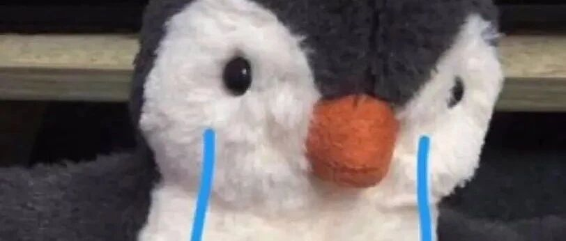

我也有时候会很讨厌自己！
点击关注 秋秋很开心

大家好，我是秋秋。
我一直都觉得我是一个很外向的人，能快速适应新场合，和别人交流也不扭扭捏捏。
可现在，我觉得自己性格越来越内向了。
1.
我好像更喜欢一个人待着了，因为和别人相处好累啊。
哪怕大老王，我也不理解，因为我性格特别急，喜欢制定计划盘算未来那种。
可大老王会说改天也行啊、今天就到这吧。
面对他没紧迫感、不慌张，我就觉得好心累啊。

直到前几天，我做了一个人格测试（也是我们心理学上很有名的）——MBTI专业量表。
我终于明白我为什么会这样了。
2.
我先来给大家说一下MBTI测评的维度，和我性格INFJ，四个字母的含义。
I，内倾，对应外倾E。代表你喜欢从哪里获得力量。

我，就更喜欢从内心世界得到力量。
我喜欢做手帐、喜欢读书、喜欢写东西、喜欢一个人处理事情，虽然我在人群中也很开心，可我真的需要在一群人happy之后，一个人静静。
N，知觉，对应实感S。代表你如何搜集信息，客观还是想法。

我就喜欢按照想法搜集信息。
喜欢从长远规划事情，而不是眼下的打扫卫生。
我做事也很跳跃，喜欢研究新技能，但是一点不喜欢动手的东西（眼里没活、不喜欢物理化学课）。
如果你动手能力很强，喜欢解决具体问题，实干，就是S。

F情感，对应思维T。代表你更在意情感还是事实。
我就更在意情感，做事看心情，而不是客观现实。

J判断，对应知觉P。代表你是否喜欢做计划、时间观念强不强。
我是一个非常喜欢建立目标，并完成的人。虽然我对客观制度不感兴趣，可是我自己的虚拟爱好，都能安排的明明白白。

3.
所以我来说一下，我不喜欢我性格上的点。
（ 1）我不喜欢爱做计划的自己
这事好像就长在我身上一样，别人的“懒散”是真的懒散。
对比我男朋友说去房间学习，半小时看了一个游戏解说视频，一小时呼呼大睡了。
我有一点工作没处理，也得边看电视边弄完。
😭
这么说吧，我根本不需要拿出一张纸做计划。
我心里就有一个倒计时！哪件事没做，那就成为我心慌的一个念头！
除非我完成了，否则那件事就一直伴随着我的呼吸，比不做更难受。
我不喜欢这种“高焦虑”的感觉！
大家都有明天赶火车，头天晚上睡不着、怕错过的经历吧。
我，就是每天每刻都在经历这种情形。
真的非常非常累人！！！！
所以，你们看到的所谓自律，对我来说真的不需要靠努力去完成。
只是为了缓解自己的心慌去做事。
对我来说，做事是容易的，不做事的心慌才是最难处理的。
（2）我不喜欢太追求意义感的自己
我性格里，有很多内省的部分，这就造成了我，总是喜欢追求意义感。
我希望我做的所有事，都是有意义的。
做视频有意义、写作有意义、出去玩有意义、做饭有意义。
😭
我每次出门，都要搜索攻略再去。
出去玩，得按照日程一一去做，打卡的每家店，都是我提前计划好的。
旅行好像不是随机去感受一个城市，而是在我的计划上一一打勾。
这一过程，是不是想想就累？
所以也丧失了很多乐趣。
而这就像天生一样，很难克服。
我还经常因为客观原因不能做，心里还要强撑着。
比如我和大老王骑行要去一个公园，我明明肚子疼，大老王也很累了，可我要坚持去。
因为没有到达终点，那这一趟骑行不就没有意义了！
只要说好一件事，哪怕刮风下雨我都要去，因为不去，不就没有意义了？
我生病、感冒了，你让我躺一天我做不到。
因为躺一天啥都不干，这一天不就没意义了？
有时候，我也很讨厌自己这一点。
（3）我不喜欢多想的自己
我以前不知道只有我自己这样。
这个和前面2点也一脉相承，就是我的大脑，我就是一台除了一直在旋转的机器。
😭
我未来十年的规划、我的退休金问题、我八字没一撇的小孩起什么名字，我都想好了。
这种想好，不是简单的几句话和清晰的认识，而是做好笔记做好攻略认真演算，每个问题都花费很多的功夫。
但好在这方面我有一个优点，就是我会计划，但我不太较真。
虽然我脑子很累，但我态度很懒散。
我喜欢计划、喜欢做事，可我生活和情感中又十分不拘小节。
可明明没那么重要的抽象事，我脑海中还总是在盘算，这个也真的好累人啊！
我不喜欢这样。
4.
这三个问题，就让我反复焦虑。
明明我已经不上班了，可是这种计划感、意义感，还是让我停不下来。
还有我想的都是抽象问题，具体生活上，我真的能力差到不行，jue dui绝对不是贤妻良母那一种！
而也有趣，我这个性格的最佳伴侣，就是我男朋友这样的：
ENTP:

他真的外表看上去很内向沉默，实际上和朋友关系处的一级好。
也是想做计划，可每次一碰到好吃的、减肥就坚持不下去。
路上一累，就说要回家，并表示完成今天这样就很厉害了！
像文章开始那样，我以前经常和他吵架，内心还想：怎么会有这样的人呢！
现在我明白了，原来他就是来拯救我这种性格的啊！
他会带着我摆烂，告诉我不必强加那些意义感，还会在很多小事上督促我。
我真的在他那里获得相当大的解脱和快乐。
✨
最后，我知道很多人会觉得会做计划、能成事还是问题吗？
没有凡尔赛的意思，我这种性格其实对自己的损耗非常大。
就比如大家会羡慕不上班的状态，可我不上班，心里那个焦虑感也停不下来，依旧会督促自己做事。
加上做什么事都追求意义，更无法抓住生活里的小乐趣。
（还非常不擅于于生活！常常洗衣服刷碗这种小事也做不好）
好在我有一个优点能内省，这些问题我都意识到了。
加上不拘小节也有好处，大部分时候我能自嗨，柴米油盐、条条框框我都不很在意。
相信我可以很快调整自己啦～
每个性格都有自己的优势和劣势，MBTI量表能帮助我们正视这些问题，但也不要盲从哦。
往期精彩内容：
作者介绍：
秋秋，95后自媒体女孩，极简生活、fire运动践行者。24岁裸辞、现在靠写作理财为生。希望能发现学习、成长、生活中的小美好，与你分享～

原创文章，转载请告知本人并标注来源
工作联系：17865514429 （微信）
请注明来意 :)
@小红书、抖音、快手：秋秋很开心
喜欢记得星标，让我们一起成长